1Pain point 1 of 4
Hidden entry point
Search was accessed through a small button in the corner of the map, making it harder to discover and less intuitive to use.
01 — Map
Sales SaaS platform
Bulk lead creation · Field sales
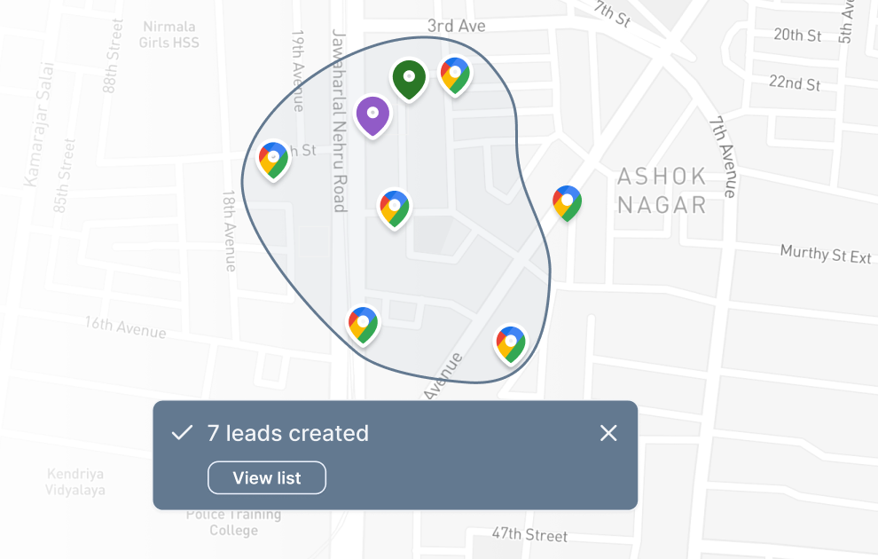
A platform for field sales teams prospecting by territory: they explore businesses on the map, create leads, manage customers and plan daily routes.
Field sales reps manage multiple locations and tasks throughout the day. Finding new prospects, managing existing customers and performing actions for each location individually can make their daily workflows repetitive and time-consuming.
My goal was to simplify map-based workflows, making it easier for sales reps to discover, select, and manage multiple locations efficiently.

The solution at a glance
Inside the project
What started as one complex workflow revealed several smaller design challenges. I decided to explore each one separately to show the thinking and decisions behind every step.
 Case study 01 · Search
Case study 01 · SearchHow can we make finding and exploring places on the map easier and more intuitive?
Read case study ↓ Case study 02 · Select
Case study 02 · SelectHow can users easily select multiple locations when the map and list share limited screen space?
Read case study ↓ Case study 03 · Act
Case study 03 · ActHow can we make bulk actions easier to manage while preventing unnecessary errors?
Read case study ↓ Case study 04 · Get feedback
Case study 04 · Get feedbackHow can we keep users informed and in control during bulk operations?
Read case study ↓Case study 01 · Search
Finding new places required multiple steps and switching between views. Moving the map meant starting the search again, making prospecting slower and less intuitive.
How might we
How might we make it easier for reps to discover and explore places directly on the map?
4 steps, 2 separate views — and a new search every time the map moved.
Original UI, shown in black & white
Search was accessed through a small button in the corner of the map, making it harder to discover and less intuitive to use.
01 — Map

Tapping search opened a full-screen view that covered the map. While typing, reps lost their sense of the area.
02 — Search screen

CRM records and Google Places sat in separate tabs. Reps had to know where a place lived before searching for it.
03 — Places tab

Search results stayed tied to the previous area. After moving the map, reps had to search again to see places in the new area.
04 — Results
Fewer tab switches, but the map would still be hidden while searching and the extra steps would stay. [confirm]
All / Leads / Google Places chips stay in sync with the list. A loading state confirms the search; “Search this area” appears after panning or zooming.
Search moved onto the map. Each pain point from the old flow has a fix with the same number.
Green = fix for the matching red pain point
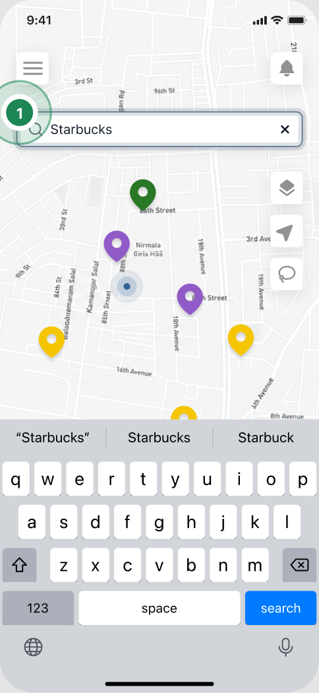
The search bar sits at the top of the map — the first place reps look.
01 — Type to search
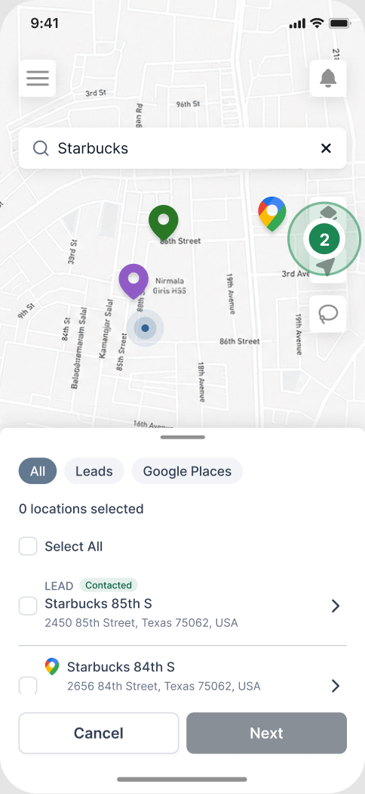
Results drop onto the map, the list opens as a half sheet — reps never lose the area.
03 — All results on map + list
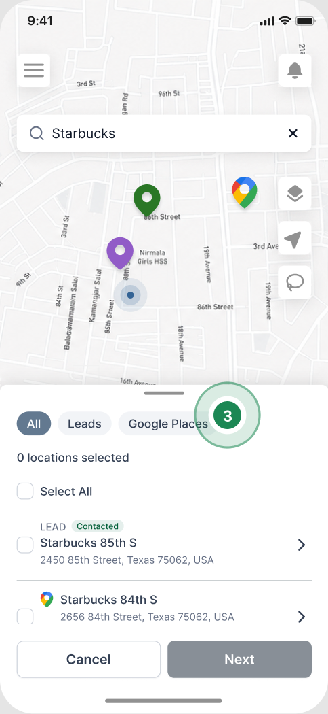
CRM leads and Google Places come back together; chips filter them in one tap.
03 — All results on map + list
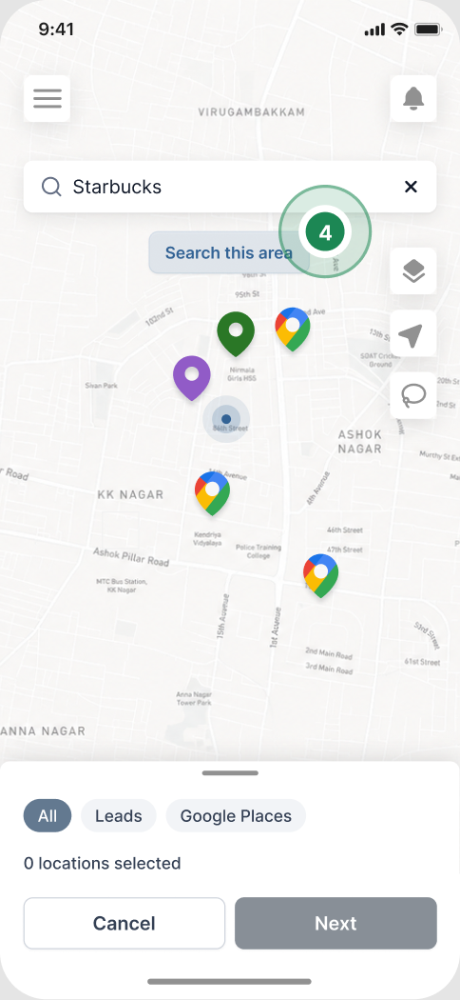
After panning or zooming, “Search this area” re-runs the search in one tap.
05 — Search this area
The search bar sits at the top of the map — the first place reps look.
Results drop onto the map, the list opens as a half sheet — reps never lose the area.
CRM leads and Google Places come back together; chips filter them in one tap.
After panning or zooming, “Search this area” re-runs the search in one tap.
Task: find gas stations near the next lead — then check the next block over.
Counted from the two flows above. [Add time-on-task or test results if you have them]
[Result — e.g. fewer taps on places that were already leads; quote from usability test]
[Your learning — e.g. a search without visible loading feels broken, users tapped “search” twice]
Case study 02 · Select
Sales reps needed to work with multiple locations, but there was no way to select them together. Each location had to be handled individually, making repetitive tasks time-consuming.
How might we
How might we make selecting multiple locations easy while keeping the map visible and the selection clear?
[Result — e.g. 7 places selected in N taps instead of N screens]
[Your learning — e.g. keeping the action buttons in a fixed place built trust]
Case study 03 · Act
After selecting, reps needed more than “create leads” — and some selected places were already leads, which led to duplicates in the CRM.
How might we
How might we make bulk actions scalable — and stop mistakes before they happen?
Didn’t scale to other actions and gave no moment to check what would really happen. [confirm]
“What would you like to do?” holds every bulk action. Before anything runs, the Summary explains the result: 2 are already leads, so 7 will be created.
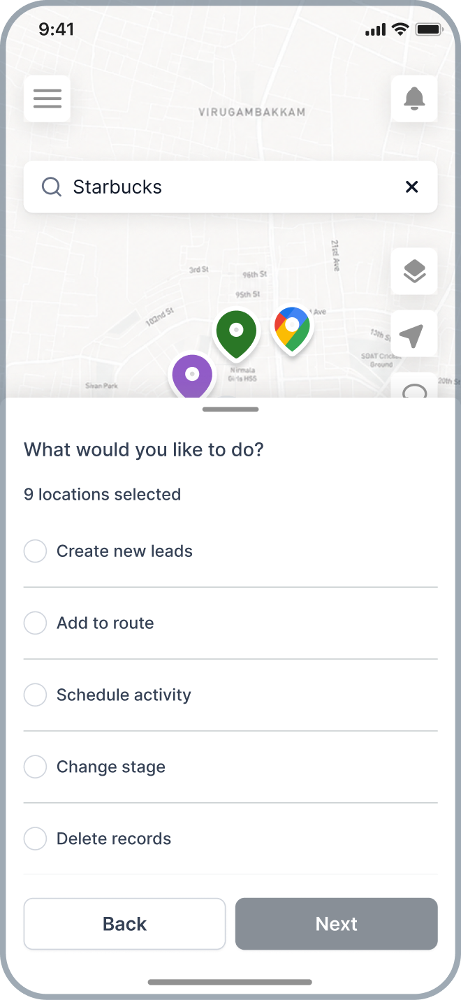
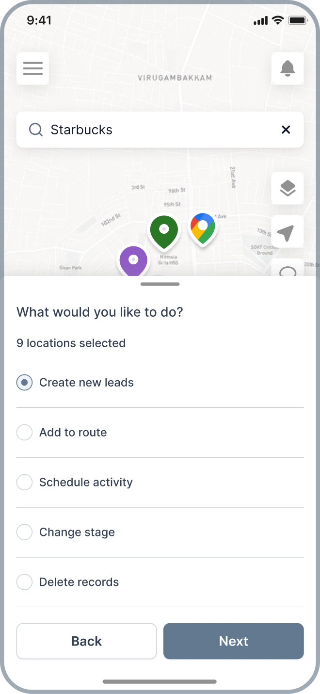
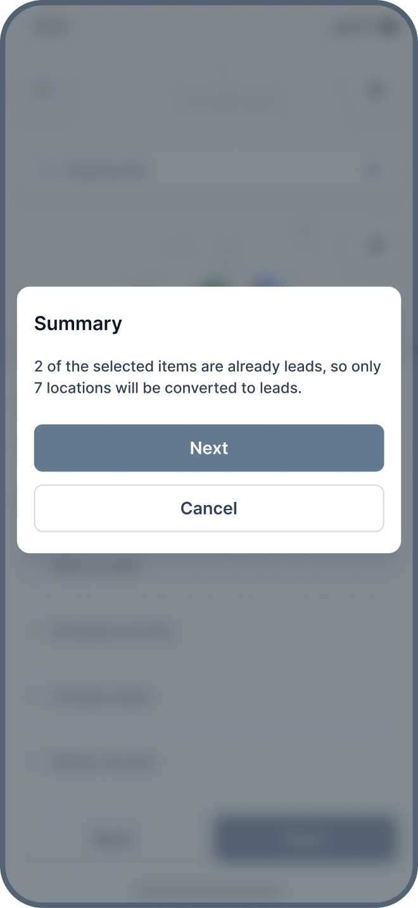
[Result — e.g. no duplicate leads created in testing / support tickets]
[Your learning — e.g. explaining the outcome in numbers beats a generic “Are you sure?”]
Case study 04 · Get feedback
Creating several leads takes a few seconds. Without feedback, reps weren’t sure it worked — or what happens when they cancel halfway.
How might we
How might we keep reps confident while a bulk operation runs — and when it’s interrupted?
No sense of progress, and cancelling had unclear consequences. [confirm]
A counter (2/7, 3/7…) shows progress. Cancel asks for confirmation, then tells how many leads were already created. A toast links to the new leads.
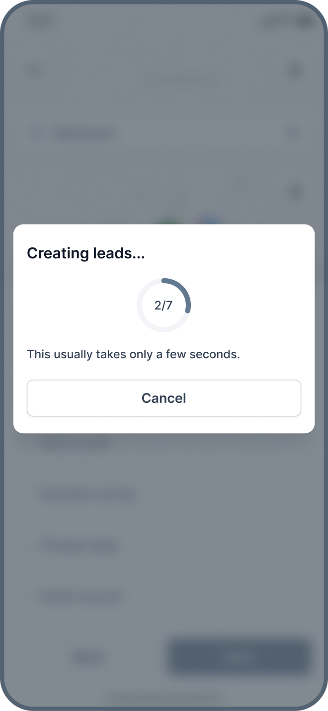
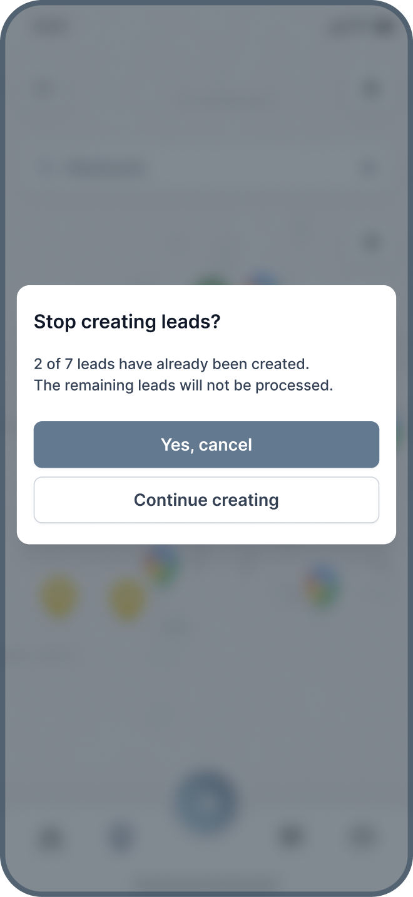
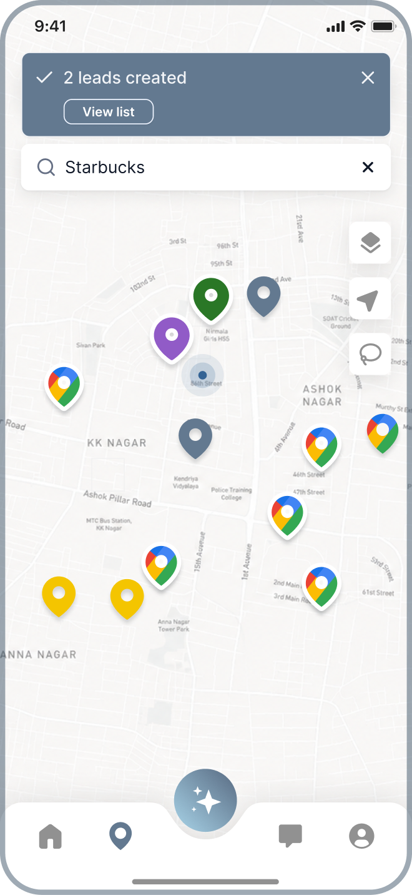
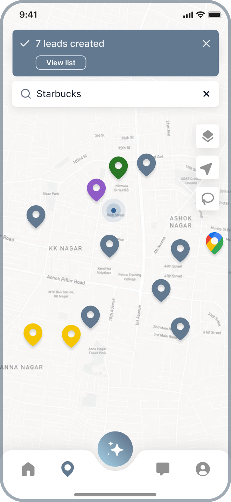
[Result — e.g. fewer “did it work?” retries / support questions]
[Your learning — e.g. edge cases like cancel deserve the same care as the happy path]
Outcome
A scalable bulk-action workflow directly within the map experience. While the showcased scenario focuses on lead creation, the interaction model was designed to support additional bulk actions across the platform.
Gdańsk, PL